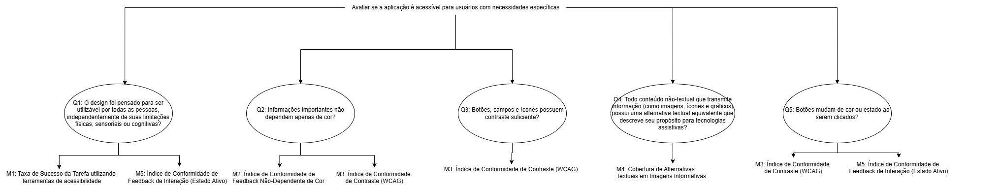

Objetivo de Medição 1: Usabilidade
Tabela 1- Objetivo de Medição 1: Usabilidade.
| Analisar | o AgroMart |
|---|---|
| Para o propósito de | Avaliar se a aplicação é acessível para usuários com necessidades específicas |
| Com respeito a | Usabilidade |
| Do ponto de vista da | Equipe de desenvolvimento e usuários finais |
| No contexto da | Disciplina de Qualidade de Software |
Questões Objetivo de Medição 1: Usabilidade
Perguntas (Questions):
Q1: O design foi pensado para ser utilizável por todas as pessoas, independentemente de suas limitações físicas, sensoriais ou cognitivas?
Hipótese 1:Espera-se que a taxa de sucesso na conclusão de tarefas essenciais por usuários com deficiências (visuais, motoras, etc.) seja de, no mínimo, 85%.Q2: Informações importantes não dependem apenas de cor?
Hipótese 2: Espera-se que 100% dos elementos de feedback (como mensagens de erro/sucesso) utilizem, além da cor, um ícone ou texto explícito para comunicar seu status.Q3: Botões, campos e ícones possuem contraste suficiente?
Hipótese 3: Espera-se que 98% dos elementos de texto e componentes de interface (botões, campos) atendam à taxa de contraste mínima de 4.5:1 (WCAG AA).Q4: Todo conteúdo não-textual que transmite informação (como imagens, ícones e gráficos) possui uma alternativa textual equivalente que descreve seu propósito para tecnologias assistivas?
Hipótese 4: Espera-se que 100% das imagens que comunicam informações relevantes possuam um texto alternativo (alt) preenchido com uma descrição concisa e fiel ao conteúdo da imagem.Q5: Botões mudam de cor ou estado ao serem clicados?
Hipótese 5: Espera-se que 100% dos botões interativos do sistema apresentem uma mudança visual distinta (alteração de cor, sombra ou contorno) no estado :active, ou seja, enquanto estão sendo clicados.
Relação entre Objetivos de Medição - Questões e Métricas - Objetivo de Medição 1: Usabilidade
Figura 1 - Diagrama de Questões e Métricas para Usabilidade.

Seleção das Métricas
Com base na abordagem Goal-Question-Metric (GQM), selecionamos as seguintes métricas para a avaliação:
Usabilidade
- M1: Taxa de Sucesso da Tarefa utilizando ferramentas de acessibilidade
- M2: Índice de Conformidade de Feedback Não-Dependente de Cor
- M3: Índice de Conformidade de Contraste (WCAG)
- M4: Cobertura de Alternativas Textuais em Imagens Informativas
- M5: Índice de Conformidade de Feedback de Interação (Estado Ativo)
- M6: Cobertura de navegação por teclado
- M7: Análise do código
Níveis de Pontuação das Métricas
Para cada métrica definida com a metodologia GQM, foram criados níveis de pontuação que ajudam a interpretar os resultados de forma clara e padronizada. Essa escala facilita a comparação entre métricas e orienta melhor as decisões sobre a qualidade da solução. Os valores foram definidos com base em boas práticas, referências da área e nas expectativas dos usuários.
A tabela abaixo mostra a escala adotada:
| Desempenho da Métrica | Interpretação | Exemplo (Métrica de Contraste com meta de 98%) |
|---|---|---|
| Excelente (10) | Atinge ou supera a meta da hipótese. Não há impacto negativo para o usuário. | Resultado: ≥ 98% de conformidade. |
| Bom (7-9) | Próximo da meta. Causa um impacto mínimo, mas a funcionalidade principal é mantida. | Resultado: Entre 90% e 97%. |
| Regular (4-6) | Abaixo da meta. Apresenta falhas perceptíveis que podem dificultar o uso para alguns. | Resultado: Entre 70% e 89%. |
| Insatisfatório (1-3) | Falha Crítica. Impede o acesso ou a conclusão de uma tarefa para um grupo de usuários. | Resultado: < 70%. |
Critérios de Avaliação
Com os níveis de pontuação definidos, a equipe criou critérios simples para julgar o desempenho da plataforma em dois aspectos principais: usabilidade e confiabilidade. Esses critérios são baseados na média de desempenho das métricas avaliadas.
Usabilidade
Avalia se o sistema é acessível e fácil de usar, entender e navegar.
| Nível de Conformidade | Condição para Atingir o Nível | Interpretação |
|---|---|---|
| Conforme / Aceitável | Todas as métricas de acessibilidade devem ter pontuação "Bom" ou "Excelente". | O sistema atende aos padrões de acessibilidade e usabilidade. Pode ter pequenas falhas, mas não há barreiras de acesso. |
| Parcialmente Conforme / Aceitável com ressalvas | Nenhuma métrica crítica com pontuação "Insatisfatório", mas uma ou mais métricas com pontuação "Regular". | O sistema é funcional para a maioria, mas apresenta barreiras de dificuldade média que precisam ser corrigidas com prioridade. |
| Não Conforme / Inaceitável | Pelo menos uma métrica com pontuação "Insatisfatório". | O sistema possui pelo menos uma falha crítica que impede o acesso ou o uso por um grupo de usuários. Inaceitável para lançamento. |
Referências Bibliográficas
WCAG 2.2 Understanding Docs. SC 1.4.1 Use of Color (Level A). Disponível em: https://www.w3.org/WAI/WCAG22/Understanding/use-of-color.html. Acesso em 7 de julho de 2025.
Bibliografia
[2] ISO/IEC 25010. Disponível em: https://iso25000.com/index.php/en/iso-25000-standards/iso-25010. Acesso em: 19 de maio de 2025.